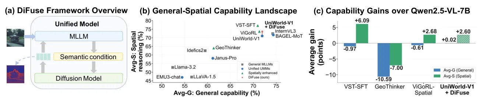
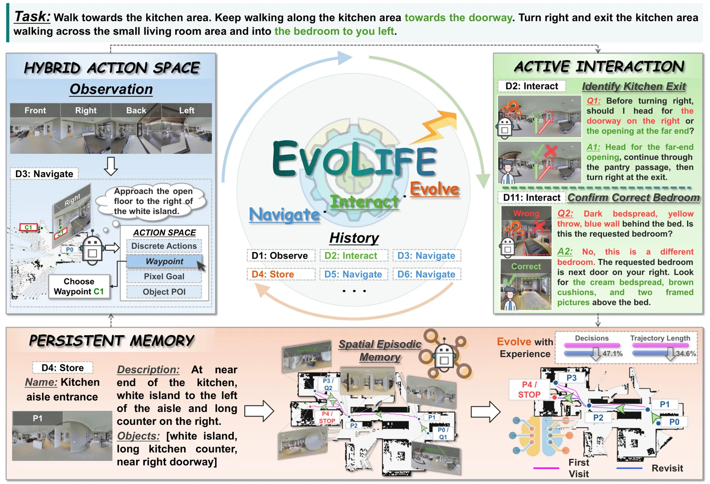
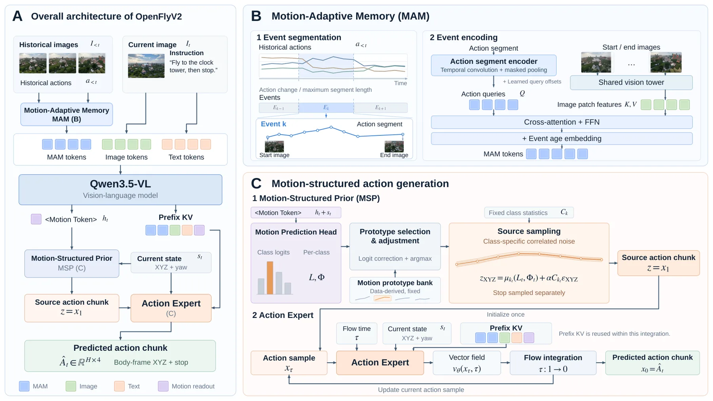
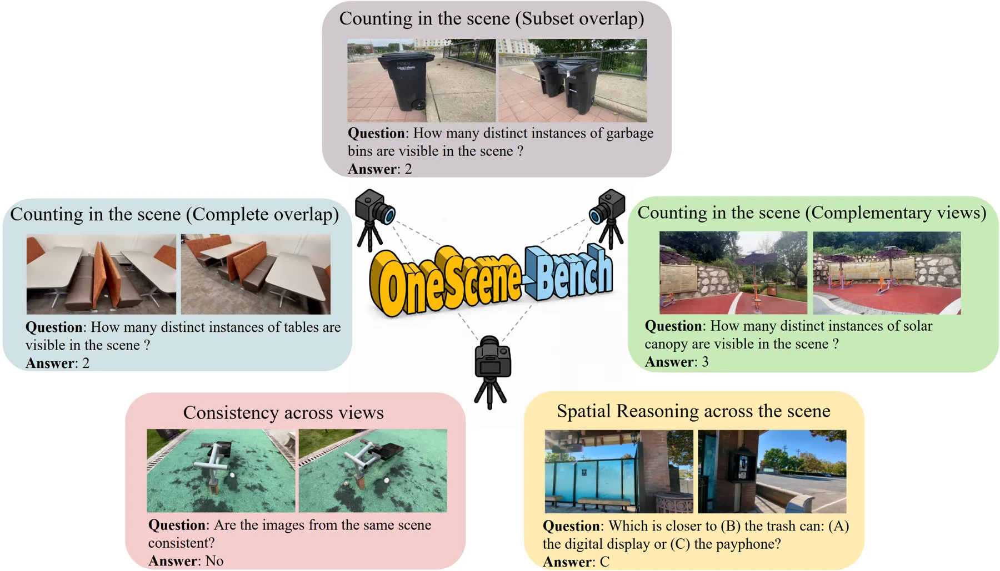

新论文 · 日期 2026-10-29 · score 7 · A层 · Embodied Navigation / VLN / Spatial Reasoning · cs.CV
内容级别：半海报
作者：Ruixin Fan, Weining Wang, Jiahui Sun, Tailai Chen
评分 7/10
统一多模态模型扩散中间表征空间推理残差注入表征复用
一句话工作总结：把 UMM 自己扩散分支第 g18 层、第 100 步去噪的中间特征做 PCA 压缩与卷积适配，对齐到视觉 token 网格后残差注入解码器前 8 层；UniWorld-V1 上空间均分 +1.80（相对匹配 SFT 基线），通用均分基本持平，但随机特征对照说明约一半增益来自“多一条残差通路”本身。
统一多模态模型同时支持理解与生成，但两个方向的信息流并不对称：理解侧的表示会去条件化生成，生成侧的中间表示却很少被反向用于理解。作者先在 UniWorld-V1 上做逐层筛查，确定哪一层 DiT 表示、在哪个去噪时刻、注入到理解分支的哪几层解码器最有效，再把选定的特征做空间对齐后以固定系数的残差加到视觉 token 上。整个过程不引入外部扩散模型或几何编码器，扩散分支与视觉编码器全部冻结，训练只用标准 SFT 目标。
Unified multimodal models (UMMs) jointly support visual understanding and image generation, yet information flow between these two capabilities remains largely asymmetric: understanding representations routine…

新论文 · 日期 2026-10-29 · score 7 · A层 · Embodied Navigation / VLN / Spatial Reasoning · cs.RO
内容级别：半海报
作者：Kai Sheng, Liuyi Wang, Jinlong Li, Haojie Dai
评分 7/10
终身导航主动交互持久空间记忆混合动作空间具身 agent
一句话工作总结：把导航做成工具化 agent：四种动作模式可切换，遇歧义主动向 guide 提问，地点记忆跨任务保留。R2R-CE 上无交互 86% SR、有交互 100% SR，记忆重访 SPL 从 82.2 升到 93.3；GOAT e-SR 94.0、LHPR-VLN 98.0。关键前提是 guide 私下可访问路线与目标信息——100% 应读作“有特权协助下的上限”，而不是自主导航水…
要让具身智能体在真实世界里长期工作，行动、交互与记忆必须协同：每次遭遇都应影响当前决策，并沉淀为后续任务的经验。EvoLife 是一个统一的导航 harness，支持四种动作模式（航点、局部离散调整、像素导航、目标导航），允许智能体在指令模糊或受阻时主动提问求助，并用“地点记录”把观测、描述、历史图像与对话绑定到空间位置。作者在 8 个基准、4 类任务族上评测，平均每集仅 1.87 次主动交互，在 4 组 100…
Giving embodied agents the freedom to act autonomously, initiate interactions, and understand their surroundings through experience is a step toward bringing them to life in the physical world. Realizing this…

新论文 · 日期 2026-10-29 · score 7 · A层 · Embodied Navigation / VLN / Spatial Reasoning · cs.RO
内容级别：半海报
作者：Junli Liu, Zhongrui You, Chenhui Li, Zhen Li
评分 7/10
航空 VLA机载推理视觉语言导航历史压缩flow 动作生成
一句话工作总结：0.8B 主干 + 0.2B 动作专家，全部推理在 DJI M30T 上的 Jetson Orin NX 完成：10 Hz 输出 12 航点，仿真 seen/unseen 成功率 62.88%/52.67%（DualVLN 38.88%/36.67%），零样本真机 100 次试验成功率 48%，训练数据全部来自仿真与 3DGS 渲染（72,352 条轨迹 + 60,006 条…
现有航空机器人系统往往一个模型只做一件事，或者依赖机外算力，无法在资源受限平台上维持闭环。OpenFlyV2 用共享的视觉-语言表征同时支撑语义理解、语言 grounding、空间推理与连续飞行控制：一个 0.8B 的 Qwen3.5-VL 主干，加一个 0.2B 的动作专家，把共享多模态上下文转成短时域航点。Motion-Adaptive Memory 把飞行历史压成事件 token，Motion-Structu…
Human cognition flexibly draws on a shared perceptual foundation to understand environments, attend to referenced entities, reason about spatial relationships, and act. Endowing aerial robots with an analogous…

新论文 · 日期 2026-10-29 · score 7 · A层 · Embodied Navigation / VLN / Spatial Reasoning · cs.CV
内容级别：半海报
作者：Swathi Suhas, Anurag Das, Bernt Schiele, Jonas Fischer
评分 7/10
多视角评测跨视角整合空间推理VLM 诊断基准
一句话工作总结：基于 DL3DV-10K 构造 1,300 题（计数 700 / 一致性 300 / 空间推理 300），用重叠度与编辑可见性控制“是否必须跨视角整合”。12 个模型在互补视角计数上只有 4.5–50.0%（完全重叠 45.5–81.5%），一致性 47.0–55.7% 基本等于随机，而空间推理最高到 92.7%——说明“能处理多图”和“能把多视角整合成一个场景”是两种能力。
现有“多图”评测无法区分“分别看每张图再聚合”与“真的建立跨视角对应”，因为很多题用单视角加取最大值就能答对。OneScene-Bench 用真实多视角场景构造 1,300 道人工核验题，通过控制物体在两视角间的重叠程度（完全重叠/子集/互补）、编辑区域是否两视角共享、以及空间证据是否分散在不同视角，来显式区分“必须跨视角整合”的情形。评测 12 个开源与闭源 VLM 后发现：互补视角计数骤降、跨视角一致性长期停在…
Vision-language models (VLMs) increasingly process multiple views of the same scene, but it remains unclear whether they integrate these observations into a coherent scene-level representation. Existing multi-…